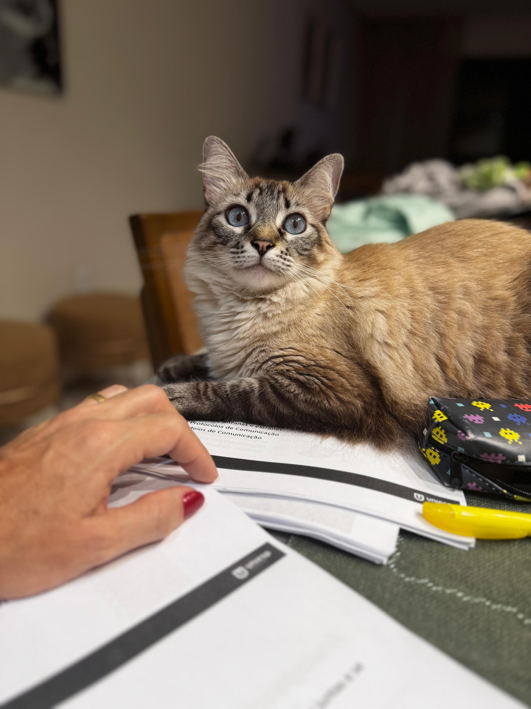

Aqui você encontrará conteúdo criado por pessoas que realmente amam gatos!
Descubra curiosidades, dicas de cuidados, guia para adotar seu próprio gatinho
e muito mais. Aproveite para conhecer nossos pets e aprender tudo sobre o mundo felino. 😸
Conheça Nossos Gatinhos 😺

Pipoca
Gatinha branca, elegante e delicada. Prefere ambientes tranquilos e interações suaves.